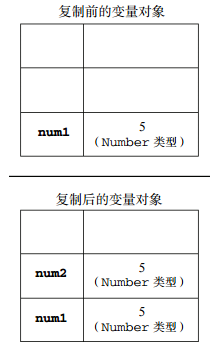
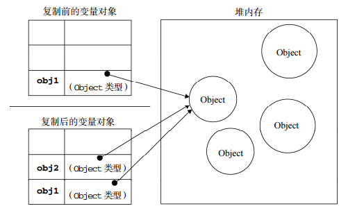
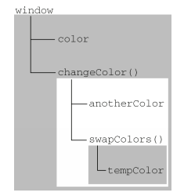

函数表达式（高3 P175）
函数概念
1、没有传递值的命名参数将自动被赋予 undefined 值。这就跟定义了变量但又没有初始化一样。 2、没有重载，如果在 ECMAScript 中定义了两个名字相同的函数，则该名字只属于后定义的函数。 3、函数参数集合类数组对象 arguments。
变量、作用域和内存
1、基本类型值指的是简单的数据段，而引用类型值指那些可能由多个值构成的对象。 5种基本数据类型：Undefined、Null、Boolean、Number 和 String。 引用类型的值是保存在内存中的对象。 var num1 = 5; var num2 = num1; 下图展示了复制基本类型值的过程：

var obj1 = new Object(); var obj2 = obj1; obj1.name = "Nicholas"; alert(obj2.name); //"Nicholas" 下图展示了复制引用类型值的过程：

2、ECMAScript 中所有函数的参数都是按值传递的。 也就是说，把函数外部的值复制给函数内部的参数，就和把值从一个变量复制到另一个变量一样。 基本类型值的传递如同基本类型变量的复制一样，而引用类型值的传递，则如同引用类型变量的复制一样。 也就是说访问变量有按值和按引用两种方式，而参数只能按值传递。 3、执行环境及作用域 执行环境（execution context，为简单起见，有时也称为“环境”）是 JavaScript 中最为重要的一个概念。 执行环境定义了变量或函数有权访问的其他数据，决定了它们各自的行为。 每个执行环境都有一个与之关联的变量对象（variable object），环境中定义的所有变量和函数都保存在这个对象中。 虽然我们编写的代码无法访问这个对象，但解析器在处理数据时会在后台使用它。 每个函数都有自己的执行环境。当执行流进入一个函数时，函数的环境就会被推入一个环境栈中。 而在函数执行之后，栈将其环境弹出，把控制权返回给之前的执行环境。 ECMAScript 程序中的执行流正是由这个方便的机制控制着。 当代码在一个环境中执行时，会创建变量对象的一个作用域链（scope chain）。 作用域链的用途，是保证对执行环境有权访问的所有变量和函数的有序访问。 作用域链的前端，始终都是当前执行的代码所在环境的变量对象。 如果这个环境是函数，则将其活动对象（activation object）作为变量对象。 活动对象在最开始时只包含一个变量，即 arguments 对象（这个对象在全局环境中是不存在的）。 作用域链中的下一个变量对象来自包含（外部）环境，而再下一个变量对象则来自下一个包含环境。 这样，一直延续到全局执行环境；全局执行环境的变量对象始终都是作用域链中的最后一个对象。 示例代码： var color = "blue"; function changeColor(){ var anotherColor = "red"; function swapColors(){ var tempColor = anotherColor; anotherColor = color; color = tempColor; // 这里可以访问 color、anotherColor 和 tempColor } // 这里可以访问 color 和 anotherColor，但不能访问 tempColor swapColors(); } // 这里只能访问 color changeColor(); 以上代码共涉及 3 个执行环境：全局环境、changeColor()的局部环境和 swapColors()的局部 环境。全局环境中有一个变量 color 和一个函数 changeColor()。changeColor()的局部环境中有 一个名为 anotherColor 的变量和一个名为 swapColors()的函数，但它也可以访问全局环境中的变 量 color。swapColors()的局部环境中有一个变量 tempColor，该变量只能在这个环境中访问到。 无论全局环境还是 changeColor()的局部环境都无权访问 tempColor。然而，在 swapColors()内部 则可以访问其他两个环境中的所有变量，因为那两个环境是它的父执行环境。下图形象地展示了前面 这个例子的作用域链。

4、延长作用域链 虽然执行环境的类型总共只有两种——全局和局部（函数），但还是有其他办法来延长作用域链。 1）try-catch 语句的 catch 块 在 IE8 及之前版本的 JavaScript 实现中，存在一个与标准不一致的地方，即在 catch 语句中捕获的错误对象会被添加到执行环境的变量对象，而不是 catch 语句 的变量对象中。换句话说，即使是在 catch 块的外部也可以访问到错误对象。IE9 修 复了这个问题。 2）with 语句 function buildUrl() { var qs = "?debug=true"; with(location){ var url = href + qs; } return url; } 5、没有块级作用域 if (true) { var color = "blue"; } alert(color); //"blue" 如果是在 C、C++或 Java 中，color 会在 if 语句执行完毕后被销毁。 但在 JavaScript 中，if 语句中的变量声明会将变量添加到当前的执行环境（在这里是全局环境）中。 for (var i=0; i < 10; i++){ doSomething(i); } alert(i); //10 1）声明变量 使用 var 声明的变量会自动被添加到最接近的环境中。在函数内部，最接近的环境就是函数的局部环境； 在 with 语句中，最接近的环境是函数环境。 2）查询标识符 搜索过程从作用域链的前端开始，向上逐级查询与给定名字匹配的标识符。如果在局部环境中找到 了该标识符，搜索过程停止，变量就绪。如果在局部环境中没有找到该变量名，则继续沿作用域链向上 搜索。搜索过程将一直追溯到全局环境的变量对象。如果在全局环境中也没有找到这个标识符，则意味 着该变量尚未声明。 6.垃圾收集 JavaScript 具有自动垃圾收集机制，也就是说，执行环境会负责管理代码执行过程中使用的内存。 这种垃圾收集机制的原理其实很简单： 找出那些不再继续使用的变量，然后释放其占用的内存。 为此，垃圾收集器会按照固定的时间间隔（或代码执行中预定的收集时间），周期性地执行这一操作。 1）标记清除 IE、Firefox、Opera、Chrome 和 Safari 的 JavaScript 实现使用的都是标记清除式的垃圾收集策略（或类似的策略）， 只不过垃圾收集的时间间隔互有不同。 2）引用计数 循环引用指的是对象 A 中包含一个指向对象 B 的指针，而对象 B 中也包含一个指向对象 A 的引用。 function problem(){ var objectA = new Object(); var objectB = new Object(); objectA.someOtherObject = objectB; objectB.anotherObject = objectA; }
函数表达式的特征
1.函数声明提升（function declaration hoisting） 在执行代码之前会先读取函数声明。这就意味着可以把函数声明放在调用它的语句后面。 2.函数表达式 var functionName = function(arg0, arg1, arg2){ //函数体 } 创建一个函数并将它赋值给变量 functionName。 这种情况下创建的函数叫做匿名函数（anonymous function），因为 function 关键字后面没有标识符。匿名函数的 name 属性是空字符串。 理解函数提升的关键，就是理解函数声明与函数表达式之间的区别。 sayHi(); //错误：函数还不存在 var sayHi = function(){ alert("Hi!"); } 3. //不要这样做！ if(condition){ function sayHi(){ alert("Hi!"); } } else { function sayHi(){ alert("Yo!"); } } 以上是无效语法，JavaScript 引擎会尝试修正错误，将其转换为合理的状态。但问题是浏览器尝试修正错误的做法并不一致。 将函数声明转为函数表达式即可。 //可以这样做 var sayHi; if(condition){ sayHi = function(){ alert("Hi!"); }; } else { sayHi = function(){ alert("Yo!"); }; }
递归
递归函数是在一个函数通过名字调用自身的情况下构成的。 arguments.callee 是一个指向正在执行的函数的指针。 var factorial = function f(num){ if (num <= 1) { return 1 } else return num * f(num - 1) }; f 是函数自标识名称，在此函数外不存在，在此函数内部调用即可。 这样在严格模式和非严格模式下都行得通。
闭包
闭包是指有权访问另一个函数作用域中的变量的函数。 创建闭包的常见方式，就是在一个函数内部创建另一个函数。 当某个函数被调用时，会创建一个执行环境（execution context）及相应的作用域链。 然后，使用 arguments 和其他命名参数的值来初始化函数的活动对象（activation object）。 但在作用域链中，外部函数的活动对象始终处于第二位，外部函数的外部函数的活动对象处于第三位， ……直至作为作用域链终点的全局执行环境。 function createComparisonFunction(propertyName) { return function(object1, object2){ var value1 = object1[propertyName]; var value2 = object2[propertyName]; if (value1 < value2){ return -1; } else if (value1 > value2){ return 1; } else { return 0; } }; } 理解： 即使这个内部函数被返回了，而且是在其他地方被调用了，但它仍然可以访问变量 propertyName。 之所以还能够访问这个变量，是因为内部函数的作用域链中包含createComparisonFunction()的作用域。